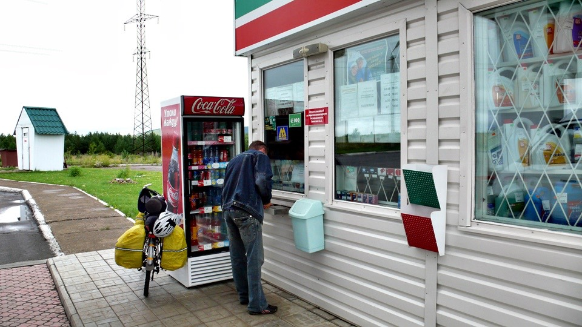
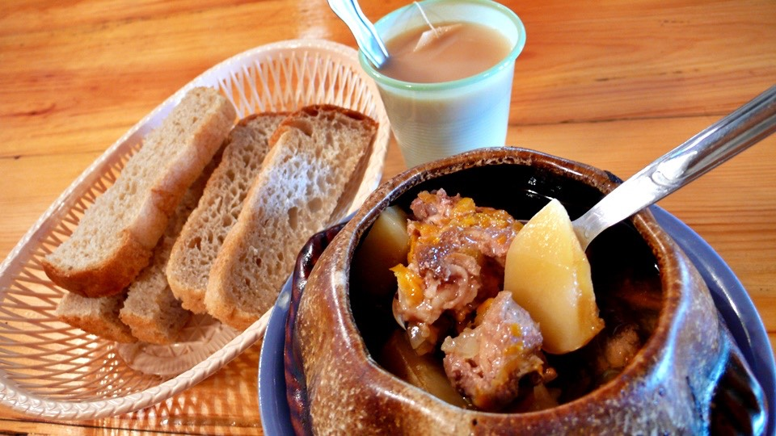

夜裡雨聲不曾停歇，半夜醒來看手錶的氣象圖示已經從下雨轉變成多雲。
窗戶外頭的天氣依然是雲霧繚繞，跟晴天八竿子打不著關係，看來手錶裡的雨已經下完了，但是老天爺還沒有下夠的樣子。
早上要離開旅館之前，用自己的水壺泡了一大杯的熱紅茶，因為餐廳賣的都是可樂還有很難喝的氣泡式礦泉水，而且價錢都不便宜。
踏出旅館大門的第一步就覺得怎麼那麼冷，今天一整天也都在十度上下徘徊。
這麼冷的天當然是穿著厚的排汗衣騎車，換裝的時候我還在想說要穿一件還是兩件，
怕萬一都淋濕那就沒有保暖的衣物可以穿了，所以還是只穿一件排汗衣加上風衣外套就上路。
雨勢轉小很多，綿密的雨滴連落在路邊的積水上都起不了漣漪，分不清楚到底是雨還是霧。
昨天發現行李受潮的後果以及一件一件拿出來風乾，之後還要重新打包回去相當麻煩，不想再重蹈覆轍。
一出發的時候就將四個包包的防水袋通通罩起來，這樣就不會再弄濕的那麼悽慘。
在溫暖的旅館待了兩天都沒有外出，現在很不適應外面寒冷的溫度。
雙手除了短的單車手套之外又多套上一層長的工作用手套，很難想像這種都是洞的廉價棉質手套居然也有保暖的效果。
臉上本來戴著口罩，但是呼出的氣體都變成白色的霧氣凝結在眼鏡上，眼前白茫茫一片，連路都看不清楚。
這樣騎車實在太危險，只好將口罩給取下，一路吹著冷風，臉部真是凍得沒有知覺，鼻水像關不緊的水龍頭一樣流個不停。
今天依然是爬山路，路上的卡車排放的廢氣真是又臭又難聞，相當噁心的戴奧辛加上塑膠味，只好閉氣騎車。
離開旅館的時候並沒有吃早餐，泡了一壺熱紅茶，出發十五分鐘之後就涼了，連溫紅茶都稱不上，再放下去就要變冰紅茶了。
一口氣喝掉這個唯一能取暖的飲品，整個早上吃的東西只有巧克力。
巧克力的重要性也是超乎想像，本來只覺得很好吃、甜甜的。但是巧克力真的能快速的提供熱量，吃多也不容易膩。
每次到商店的時候我都會補給一些帶在身上，要是價錢能夠再便宜一點就好了。
一個小時之後查看防水袋的情形，雖然沒下多大的雨，但上面已經佈滿水滴還有卡車疾駛而過濺起的髒水。
當然這些東西我身上也有，但都被衣服給吸收了，肉眼看不見，只覺得自己越來越髒。
路上突然出現莫斯科的距離告示牌，還有一千六百多公里，這應該是走M5道路的距離，走M7的話可能還會再近一點。
看到這個牌子，心裡覺得雖然莫斯科感覺很遠，但也不是真的那麼遠，一天騎一百公里的話，半個月之後就可以到了。
雨滴很綿密，隨著風勢飄盪，戴著帽子也擋不住，每騎一小段路就要停下車來擦眼鏡。
停車的時候順便拍張照，才短短的幾秒鐘鏡頭也沾上了雨滴，擦完眼鏡又要擦相機的鏡頭。
雨雲仍然沒有散開的意思，遮蔽了所有的天空，這樣的情況之下GPS居然還能使用蠻令我感到訝異的。
本來估計著十點左右可以吃早午餐，但是沒看到喜歡的餐廳。
沿路上很多賣東西的小店，賣了很多奇怪的東西，像是腳踏車、帳篷、風箏、釣魚器材、充氣式游泳池，而且連槍枝都公然販賣。
我只能想說那是玩具槍，並不是真的槍，除了這些商品之外，真的比較像是名產的就是木頭切片然後作畫的藝術品。
中途經過加油站，因為看到用餐的標示，還特地繞過去看，結果只有一台冰箱，這麼冷的天氣誰還要喝冰的東西。
看來是沒辦法喝熱奶茶跟吃飯，透過玻璃窗問裡面的人有賣巧克力嗎？身上只剩下一根可以吃了，結果連巧克力都沒賣。

除了臉之外，身上會覺得冷到受不了的地方就是腳掌，明明就穿著襪子並且包覆在鞋子裡面，怎麼會這麼冷呢？
一邊活動腳趾頭一邊騎車，騎了一個早上，好不容易路面開始變乾，看起來心情就好多了。
看到告示牌說下坡有十一公里，想說終於可以滑個過癮了。
之後才發現數字中間隱藏了一個小小的小數點，實際上這個下坡只有短短的一『點』一公里。
一直到下午一點，出發後五個小時，終於看到比較大規模的休息區，餐廳並排展開。
找一間比較大，可以將小多牽進去屋簷下躲雨，自己則比手畫腳的在餐廳裡點餐。
終於吃到了熱食，非常的開心，小瓦罐的馬鈴薯燉牛肉、奶茶、麵包和水餃。

這邊的奶茶好小一杯，喝得很不過癮，水餃的沾醬則是番茄醬跟美乃滋，這可是包肉餡的水餃呢，味道一點也不搭，真想念醬油的滋味。
吃完之後又點了一次熱奶茶，只是這次改裝在自己的水壺裡，一樣的價錢能喝到七百CC的熱飲，以後點飲料都拿著空水壺去裝比較划算。
進餐廳的時候還是乾冷的天氣，吃飽飯出來又開始下起了雨，利用躲雨的時間整理前半天的遊記，這樣晚上就可以早一點睡，少花一點時間弄這些。
雨勢稍緩之後繼續騎車，路面幾乎都是乾燥的，空氣也不再那麼濕冷。
天空的雲層雖然還是很厚，但都是白色的雲，黑壓壓的雨雲已經越來越少，霧氣也逐漸散去。
甚至連雲層都裂開了一個縫，終於看見好久不見的藍天，陽光透過縫隙灑在地上，角度對的時候就能曬到暖和的太陽，停下車來給他曬個夠本。
天氣繼續保持好轉的型態，雖然還要一百多公里才會真正離開山區，但現在的氣候已經算穩定多了。
不知道是不是手錶的海拔計壞掉了，目前的海拔居然是負兩百公尺，莫斯科有這麼低海拔的地區嗎？
而且我還是在山上呢，比這裡還更低的山谷之間赫然出現城鎮，規模還挺大的，整個山谷幾乎都是城鎮的範圍。
一開始只瞄到這一小部份我就已經覺得是個大城。
等滑過下坡轉一個彎之後才看見城鎮的全貌，真是大得令人吃驚，而且房舍都是很中古世紀風味的房子，並不是現代的水泥建築。
很像時光倒流回到過去的感覺，真不敢相信現在是二十一世紀。
這一路上看到的路邊小販真是各有特色，從一開始賣香菇、賣水果，還有今天一大堆店家在賣充氣式的游泳池。
本來不知道這些瓶瓶罐罐裝的到底是什麼，直到商家的看板畫上蜜蜂，這才知道原來是是蜂蜜。
天氣很冷的緣故，顧店的人都穿了很多保暖的衣服等著生意上門，而真的生意都不錯，大家都會停下來光顧。
起碼賣香菇、水果或是蜂蜜都是比較有意思的東西，賣得掉是應該的，但是那些展示到褪色的充氣游泳池到底有誰會買？
雖然已經在負海拔的地區，可是一路上依然都是下坡，讓我有點緊張，因為之後還得重新爬回海平面以上。
這麼滑下去的話之後爬坡肯定會苦哈哈的，晚上六點多的時候發現旅館的招牌。
旅館的字眼後面還括號寫上了淋浴，現在這些簡單的單字我都可以辨識，看久了就懂了，旅館看起來不怎麼樣，價錢應該不貴吧？
打算今天就住在這裡，剩下的路明天再騎，問了住宿價錢，居然開口就是六百元，實在有點獅子大開口。
或者是我的要求太龜毛了，俄羅斯的物價大多比台灣還高，雖然盧布比台幣還要值錢，可是東西的售價則更加的貴。
一大瓶汽水標價都是五十盧布，相當於六十五元台幣，吃東西也很貴，隨便都要一百塊才能吃飽。
依這樣的水準看來，住宿的費用衡量台灣的水準，俄羅斯這邊就算開價一千盧布也算是正常。
但是只要索價超過五百盧布的旅館，肯定掉頭立刻就走，這是我能接受的上限，再貴的話寧可露營也不住。
吃東西不怎麼計較價錢，只在乎味道如何以及吃不吃得飽，住旅館倒是很挑剔，奇怪的個性。
反正天色還早，我非常喜歡俄羅斯一直到晚上十點天都還很亮這一點。
這樣騎起車來很沒有壓力，慢慢騎慢慢找旅館，找累了先去吃晚餐，吃飽再繼續騎都沒關係，因為離天黑都還早得很。
既然旅館的價錢不親切那就再往西邊騎，三十公里之後到達阿薩，路邊停滿了很多的大卡車，而路旁的店家都在冒著沖天的白煙。
這可是大家都喜歡吃的食物，烤肉，俄羅斯烤肉跟哈薩克的一樣，都是用木頭來烤而不是用木炭。
肉則是牛肉，切的大大塊串起來，調味料只有粗鹽，烤好之後配上切絲的生洋蔥，味道真是好吃到連舌頭都要吞下去了。
沿路上最常看到的餐廳招牌就是『咖啡』，還有這個『烤肉』，只要是營業中的，生意都很好。
過了香味四溢的烤肉區之後又出現了旅館的招牌，有招牌但是卻找不到旅館，問了人才知道這一間餐廳就是旅館。
外頭停了一輛警車，裡面有兩個警察在吃飯，俄羅斯的警察很酷，完全不理我，當我不存在。
就算外頭的人都已經圍著小多在討論我這個騎自行車旅行的台灣人，而我本人也站在店裡面比手畫腳的問旅館的價錢，
這兩個警察就是不理我，路上開過的警車也是不理我，臨檢站的警察也不理我，跟哈薩克動不動就招手叫我過去的警察大不相同。
警察不理我，這一點我還蠻喜歡的，不用常跟警察打交道，可以省去一些麻煩。
旅館的價錢寫在紙上面，超級便宜的兩百元，淋浴費用則是一百元，分開計算。
價錢雖然便宜，但是房間漂亮又大間，也有暖氣可以用，小多牽進來更是沒問題，這種價錢實在太漂亮了。
因為想省一百元，所以就沒有付費淋浴，到洗手台那邊擦澡的時候才發現水龍頭流出的是熱水，既然有熱水那何必花錢呢？用熱水擦一擦身體舒坦很多。
一出發就覆蓋上的防水袋，整天都沒有拿下來，也是因為懶惰的緣故。
早上看到防水袋上面佈滿著髒污，終於知道為什麼每次洗衣服都那麼髒，再懶也得趁今天用熱水好好的洗乾淨。
手錶的氣象預報又有好消息，早上的時候從下雨變成多雲，到了晚上多雲的標誌上頭又多了一個太陽，氣溫也逐漸回升。
而外頭的天空真的是陽光普照，終於可以拋開多日的陰霾，好好的享受夏日的熱情，溼答答的鳥天氣一點也不好玩呀。
餐廳的裝潢很漂亮，店名很可愛，有一個大大的『STOP』，把路過的人都攬進來吃東西跟住宿。
真的很希望自己可以看懂菜單上的內容，俄羅斯的菜單有點複雜，菜名後面跟著兩個數字，一個是價錢，另外一個則不知是什麼意思。
猜想應該是重量的單位吧，一百公克、兩百公克的意思，但是煮菜除了味道要好之外，還要估算重量未免也太講究。
餐廳的媽媽幫我點了通心麵加上一塊烤牛排，真的好好吃，燒烤料理深得我心，要是價錢再便宜一點的話就可以天天吃了。
麵包、奶茶這些都是不能少的，俄羅斯的料理分量不是很多，都還要靠多吃一些麵包來填飽肚子，不然一下子又餓了。
早上出發時的雨霧天氣已經消散，揮別了陰霾的氣候，太陽也重新露臉。
終於能開始享受俄羅斯的旅行，好天氣搭配好心情，這次睡前要祈禱睡醒之後不要又變成雨天，明天你也要出現呀～太陽公公。
繼續閱讀：7.26 放心～我們罩得很<
俄羅斯-盧布－ 1：1.3 台幣
7.25
總計：583元
熱紅茶10元、午餐馬鈴薯燉肉、麵包、奶茶、水餃135元、熱奶茶12元、巧克力兩包50元、熱奶茶9元、旅館200元、晚餐牛排通心麵、麵包、奶茶102元、水蜜桃汁65元